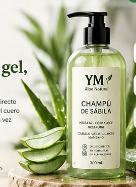
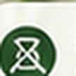
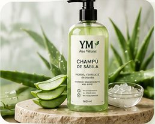
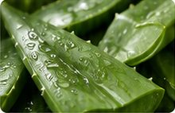
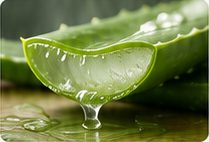
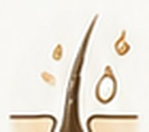
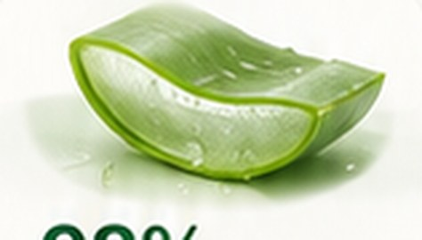
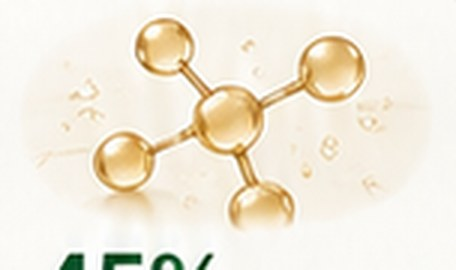
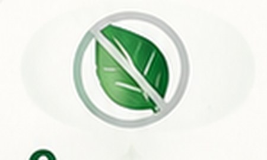

Un champú que se comporta como un gel, no como un jabón.
YM Aloe Natural lleva el 98% de gel puro de sábila directo a la fibra capilar, sin sulfatos ni siliconas que tapen el cuero cabelludo. El resultado: cabello que retiene agua en vez de perderla.


sinsulfatos
Frasco de champú de sábila YM Aloe Natural, 300 ml
La sábila, en su estado más puro
Así es la materia prima antes de llegar al frasco: hoja, gel y corte, sin nada más.

Hoja de sábila fresca recién cortada

Penca de sábila cortada mostrando el gel natural
Hoja entera, gel en bloque y penca fresca — las tres formas en las que trabajamos la sábila antes de envasarla.
Cómo actúa el gel en tres etapas
Desde que entra en contacto con el cuero cabelludo hasta que sella la fibra, así se mueve la sábila por tu cabello.

01 · 0–2 minPenetra
Las moléculas pequeñas del gel atraviesan la cutícula del cabello en lugar de quedarse en la superficie, como sí hacen las siliconas.
Repara
Los aminoácidos y enzimas del gel refuerzan la queratina dañada por el calor, el color o el agua dura.
Sella
La fibra queda cerrada y lisa, reflejando más luz. Por eso el brillo se nota desde el primer lavado.
Lo que realmente lleva el frasco
Sin lista de ingredientes ilegible. Estos son los cuatro números que le importan a tu cabello.

Prensado en frío, sin agua añadida como primer ingrediente.

Refuerzan la fibra dañada por calor o color.
El mismo pH natural de tu piel, no el de una barra de jabón.

Nada que tape el poro capilar ni acumule residuo.
Lo que cambia después de la primera semana
Reseñas reales de personas que cambiaron su champú habitual por YM Aloe Natural.
Dejé de necesitar mascarilla cada lavado. El cabello se siente pesado de agua, no de producto encima.
Tenía picazón con casi todos los champús comerciales. Con este no volvió a aparecer.
El brillo se nota desde el primer enjuague, pero lo que más me convenció fue que no se me cae tanto al peinarlo.
Tu cabello, en modo restauración.
Escríbenos por WhatsApp y coordinamos tu pedido del frasco de 300ml al toque.